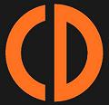
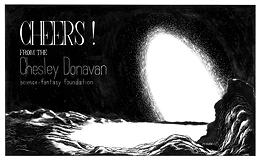
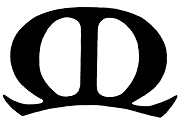
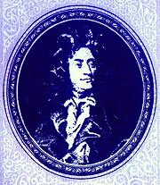
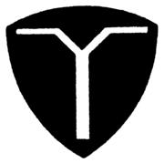

SAFARI
Users
In the Beginning there was CD
 What is now Musica Donavania, has its roots far back in the mists of time, in the middle of a previous century (early 1950s). It was originally a Science and Science Fiction appreciation group, founded under the name CD Inc. The original logo was actually on a modified Civil Defense helmet liner with "INC" added after the CD, and some destructive device embedded in it. At the time "C" stood for Ron Cobb and the "D" for Tad Duke. The Inc. stood for nothing, as the group was never incorporated. A very Early Photo in my posession shows an original helmet with a large wooden screw embedded in it. For more on this very early, non-musical phase, see Who is Ron Cobb. As noted, Paul Shoemaker was also part of this early group.
Ron Cobb now lives in Australia, and is no longer much involved with the group, but he did attend at least two Music Group events in 2000. I haven't been able yet to find what happened to Tad Duke.
The Chesley Donavan Foundation:
Over time other people became associated with the group, notably art student Jon Lackey and small time science fiction author Helen M. Urban, both from the science fantasy side. Helen's only well known work is The Glory of Ippling, published by Galaxy in 1962. It is notable for the really bad reviews it gets. The CD was changed to represent Chesley Donavan, Chespingus (Prince or whatever) of Donavania, a tiny mythical country somewhere in the Danube Valley. The official name became The Chesley Donavan Science-Fantasy Foundation. This organization was well noticed as part of the Science Fiction / Fantasy community, as shown by this Book ExcerptAs the focus on science fantasy slowly faded, it became simply the
Chesley Donavan Foundation. The choice of the name "Chesley" was
supposedly inspired by admiration of the planetary paintings of Chesley
Bonestell. The "Donavan" part supposedly came from a 1942 science fiction
novel by Curt Siodmak, "Donovan's Brain", later made three times into
movies. This I learned in the early years, but I hear some have denied
that in later times. I suspect the spelling "Donavan" was a typo not
discovered until after documents were printed.
Donavania:
Much of the early mythology of the group revolves around the Grand Duchy of Donavania, from ancient times through its name change to Republic of Donavania and on to the final dissolution of the Donavanians as a people in the deserts of Southern California. Paul Shoemaker wrote a wild fantasy titled Uprising in Sularia based on Donavanians who stayed in Europe and founded a new Sularia. with a new Chesley Donavan. It is in four sections, but we have published here only the first section as that section is largely based on Donavanian history from the 1950s. The other three sections are dated 1992. The first section is the only written record we have of some aspects of the oral history of Donavania.
Original Donavanian Logo:
During the 1950s, the two symbols of the Chesley Donavan foundation first appeared. The Donavanian "CD" emblem is seen in all three portraits on our Portrait Page and the one at the top left displays the Ankh (Egyptian looped Cross) which predominated even past the time of the CD Revolts.Over time, the group grew, but some of the founders had departed.
Ron Cobb, later to find great fame as a Free Press cartoonist and major
designer for such productions as "Alien" and "ET", had been shipped out
to serve in the Vietnam War. Tad Duke disappeared and I have no idea
what happened to him. Paul Shoemaker was the only one left of the earliest
founders, and Jon Lackey and Helen Urban who came just a little later.
Donavanian Imperial Logo:
In 1960, Andrew Grygus, writer of this page, became a member. By this time the connection to science fiction fandom was fading rapidly, but the story of Donavania was still current, though little new material was being created. The "Imperial Logo" seen to the left had mostly replaced the original logo. I have an Invitation from 1962, which was still based on the Chesley Donavan myth. Meanwhile, interest in the religion of Ancient Egypt was increasing, so use of the Ankh became more common. Also increasing was interest in music, although none of the regular members were musicians. Interest in music was strongly promoted by Paul Shoemaker, and later by Jon Stringer.The group was meeting once a week, on Friday. In the late '50s and
very early '60s meetings were in Helen Urban's garage in Burbank, but by
1963 they were in whatever abandoned theater, run-down store front,
abandoned church or other digs Jon Lackey was living in. This varied,
for though his landlords were unbelievably tolerant of his being behind
on the rent, eventually they'd force a move. A move was always traumatic,
because Jon was a pack rat beyond peer.
The First Revolt:
Newer CD members became fed up with autocratic rule of Paul Shoemaker, backed by Jon Lackey and Helen Urban. A more democratic situation was thought desirable and a petition was brought forth titled PROPOSED CHANGES IN THE CONSTITUTION. Signing FOR were Helen Urban, Andrew Grygus, Thomas Slover, Jon Lackey, Will Birkner, George Loring Fisk, J Lee van de Wetering, Mathew Jaro, Jerry Woods, Louis Panuse, and Jon Stringer. Paul Shoemaker alone signed on the AGAINST side.Paul Shoemaker never came to another meeting, but treated the "Chesley Donavan Foundation" and its history his own personal property. He used it for other groups, particularly a gay men's group. There is some evidence of a "Chesley Donavan Organization" in Twentynine Palms, California, but there appears to no longer be a Web site or any other information. Helen Urban also left the group at about this time, as she was in very poor health.
Paul Shoemaker organized the "First and Most Holy Rationalist Orthodox Freethinking Church of Donavania", which held events such as the "Blessing of the Telescopes" at the Griffith Park Observatory in Los Angeles. This was in keeping with his atheist convictions of the time. After "coming out", Paul started using the name "Harold Moss". He continued to expand the Donavanian mythology until at least 1992.
Eventually he became a priest of Horus with the
Church of the Eternal Source. Apparently he took this quite
seriously, maintaining a temple room with wonderful, skillfully done
replicas of ancient Egyptian artifacts and artwork. He continued an
intense interest in music until his death in 2010. There is an obituary at
Music Web and another on the
Church of the Eternal Source site, now again available.
Roots of Musica Donavania
 Well before the Revolt, the Music Group was forming as a distinct entity. I have found an invitation to a Bach Birthday Event dated 21 March 1964. This was printed by members who were letter press printing enthusiasts. It is notable that the address for this event is not one of the regular CD meeting places. Clearly there was unrest well before the Revolt. The Bach's Birthday tradition carried forward until about 2016, but was getting a little stale because everybody is over-doing Bach these days.
After the revolt, emphasis shifted yet farther from science fiction, particularly to musical and seasonal events. St Cecilia's day became a major event, and the Solstices and Equinoxes were celebrated with pseudo-Egyptian events. Only a few months after the revolt, members interested in letterpress printing turned out an invitation brochure for Saint Cecilia's Day. Printed on very fancy paper it was far beyond what most small organizations could do in those days. The Saint Cecilia's Day celebration of the music of Henry Purcell continues to this day (2019, and 2020 if the COVID allows) every November.
The seasonal events, held four times a year, became quite elaborate. We have a photo taken at a Solstice Event. More photos will be published as they surface. These were generally organized and presided over by Jon Lackey. The march from Alan Hovhaness' Saint Vartan Symphony became the standard ceremonial march for these events. For Jon, a hard core atheist, these events were strictly theatrical without religious connotations.
Again - Revolt:
Jon Lackey proved even more imperious than Paul Shoemaker had been. He kept all CD documents, history, artwork, etc. locked up as his personal property. No-one else was allowed to touch any of it. He seized the invitation lists and all other items of control. He had an over-riding need to be the center of everything, to maintain complete control, and he recognized no contribution by others. This was becoming central to Jon's personality, and served him poorly in years to come.In reaction, several of us formed the Philip Yoiville Society. I don't remember much of the logic here, even though I made most of it up myself. I think Philip Yoiville was a science fiction character who was supposed to be of Tatar extraction. I don't remember the logic of the double gibbet shield logo either.
One of our Revolutionary Tracts laid out the real problem - though we didn't immediately recognize it. It soon became clear that the real problem was, as adults, we didn't need this organization and mythology stuff - we had much more urgent concerns (girls, jobs, girls, etc.) concerns to deal with. Reality had come home to roost. Today, we can look back on this stuff with amusement - but it is part of our lives, not to be forgotten or disrespected.
While the Philip Yoiville Society didn't last long, we did have some high quality meetings and solidified the Music Group with Jon Stringer the key organizer of the music - and that music events were not held at Jon Lackey's. A number of our schedules and invitations are available here: September 1966, October 1966, December 1966, January 1967. These were probably written by Jerry Woods, though Ron Myron could also write in this style. Jerry Woods had the printing press.
Eventually, the tasks of adulthood took its toll on youthful enthusiasm, and the music functions were returned to Jon Lackey, though I don't remember the exact mechanism for how this happened. Jon Stringer continued to be the music librarian and organize the music side of events until his stroke in 2000. All music events continued to be held in homes other than Jon Lackey's.
Jon Lackey continued to hold weekly meetings for some time, and it was at one of these Friday events that Jon physically shoved me out of his digs, forbade me from ever to return, and I was Banished for Life from the Music Group (for his life, as it turns out). The reason for this expulsion was silly, but hinged on Jon's tender ego and pressing need to be the center of the universe. I don't have an exact date for this, but it was apparently between mid 1973 to mid 1974. Jon also continued with the astronomical events, as shown by this Announcement from 1973. Neither these events nor Ancient Egyptian religion are currently a part of Music Group practice - however, under it's new name, Musica Donavania, some elements may reappear.
Banishment didn't bother me, and I never felt hostility toward Jon, it was strictly a one-way enmity. I had lots and lots of other stuff to do. Among other things, I found myself on the Church of the Eternal Source invite list and attended some pretty darn good events and parties there.
Gatherings became monthly events, and were, of necessity, held at other peoples homes, because Jon was unable to pay his utility bills. Jon kept firm control of the invitation list and the dates, timings and themes, of what he named "Music Group". Now and then, when Tom Slover and Peggy Myron were in town, they invited me along to a Music Group event, to Jon's great distress - but there was nothing he could do about it in other people's homes. I remained quite cordial, and he remained "Harrumph!".
In February, 2007, Jon Lackey died of cancer, while denying there was a problum right up to his last couple of weeks. An appropriately sanitized Obituary was posted by Mallory & McCall. Their Web site is gone, but we have saved an image of the page as Jon Lackey M&Mc Obituary Mallory and McCall had long before stopped hosting Music Group because of a strong feeling they were just being used by Jon. Bonnie Callahan took over responsibility for maintaining the Music Group. Unfortunately, Jon Stringer also died in 2007, a few weeks after Jon Lackey. This was after long illness during which he could no longer coordinate the music programs. We have a memorial page for Jon Martin Stringer.
Although I had never met any of the people who were active in the Music Group at this time, through some connection, probably Tom and Peggy, I was invited back in March 2007. The next month, April, I hosted my first event - after which I rotated with Bonnie and Tim, and Karen and David Miodowski. Karen died in December 2012, so Bonnie and Tim, and I, now share responsibility for keeping the group going.
A historic listing of recent events (2007 tp present) can be found on this site at Musica Donavania Past Events. This listing includes links to many photos, playlists and recipes for dishes served. Now, in March 2017, the list has been extended to include events from 1961 through 2018, many with photos.
In late 2016 I acquired over 950 CDs of the Jon Stringer music collection from his wife, Marge Stringer, and in mid 2017 I acquired the remainder, for a total of about 1600 CDs. She said she sold about a thousand in her Amazon store, but she tended to greatly overestimate numbers, so I do not know.
In honor of its earliest history, on 31 January 2017, I suggested Music Group be renamed to Musica Donavania. This name change was approved by all members with knowledge of the group's history.
Andrew Grygus, 1 July 2014 & subsequent.